Phase 4C · Combat visual subphase
1 barrier master / 8 existing cover shells · directional gunfire · compact impacts · dodge streaks
Unity-Chan locked. Combat parameters unchanged; separate user-authorized lifecycle guard. Enemy and weapon replacement deferred.
Actual Godot OpenGL 1280×720. Scripted/API verification, not manual. Effect lab: identical 20 ms sample; production captures use the unchanged gameplay camera.
Full scope / reproduction / limitations · Final validation · ABBA static render costUrban Arena / production camera
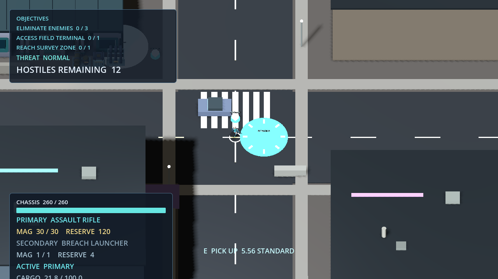
Before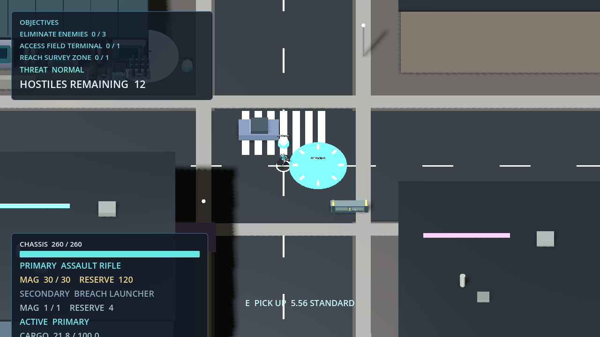
AfterExisting cover -> security shell
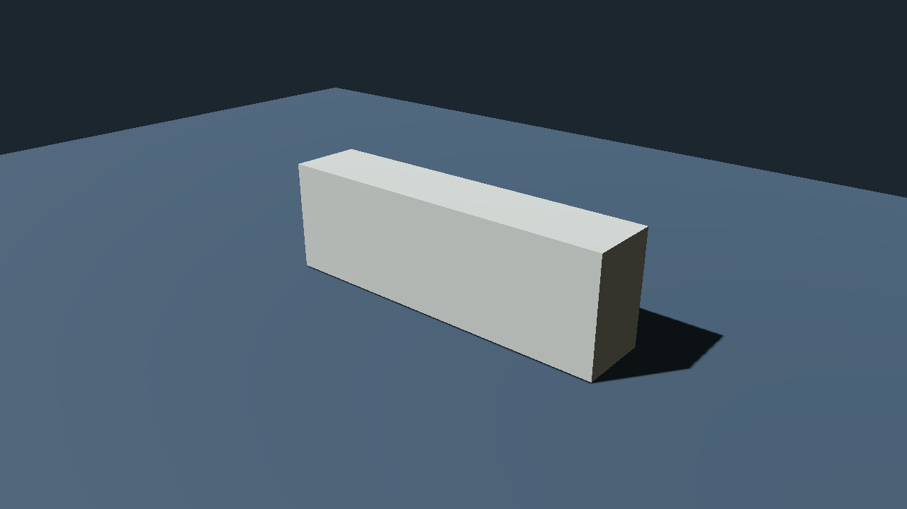
Before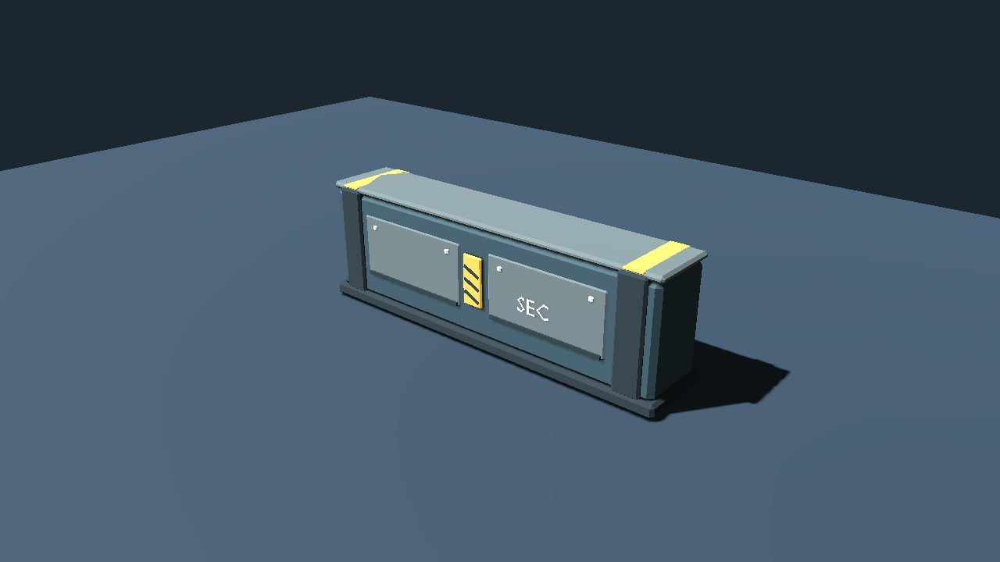
AfterMuzzle / fixed 20 ms
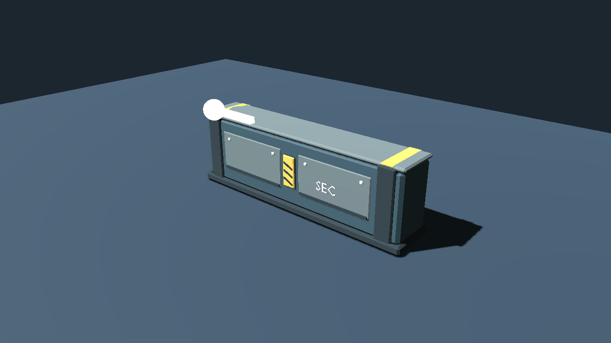
Before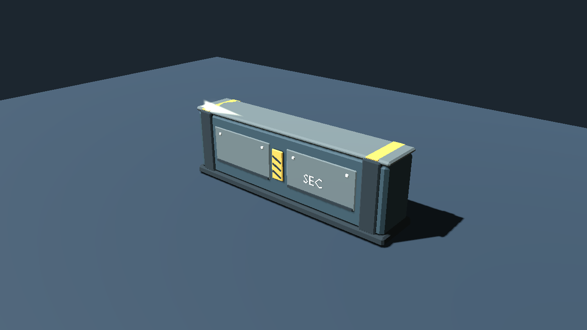
AfterImpact / fixed 20 ms
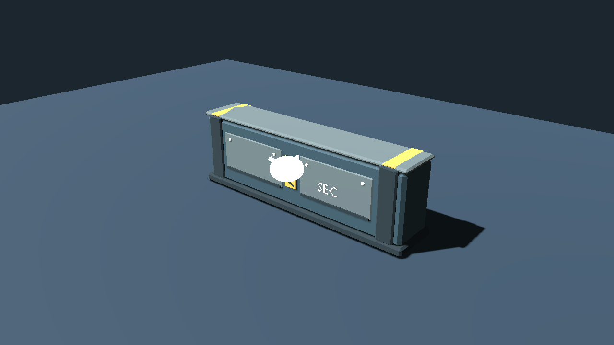
Before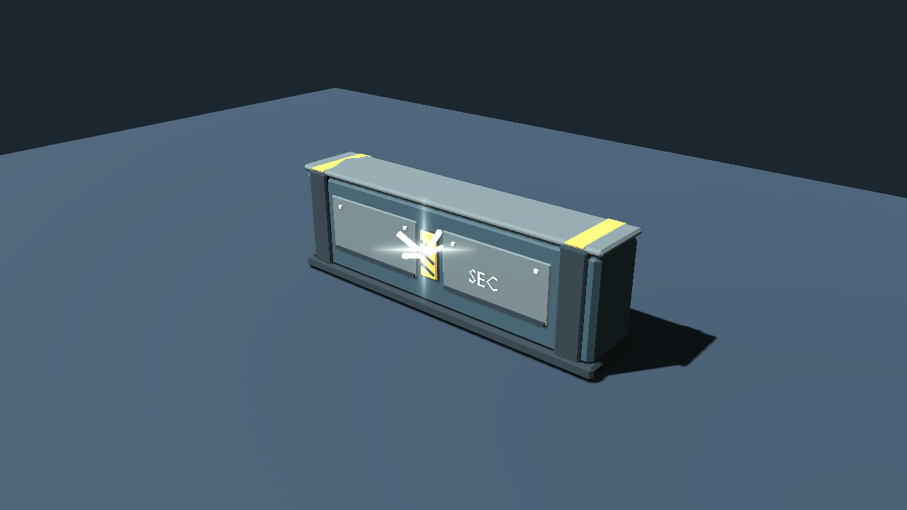
AfterDeath accent / fixed 20 ms
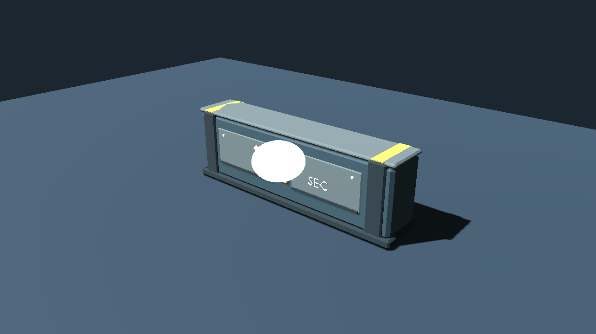
Before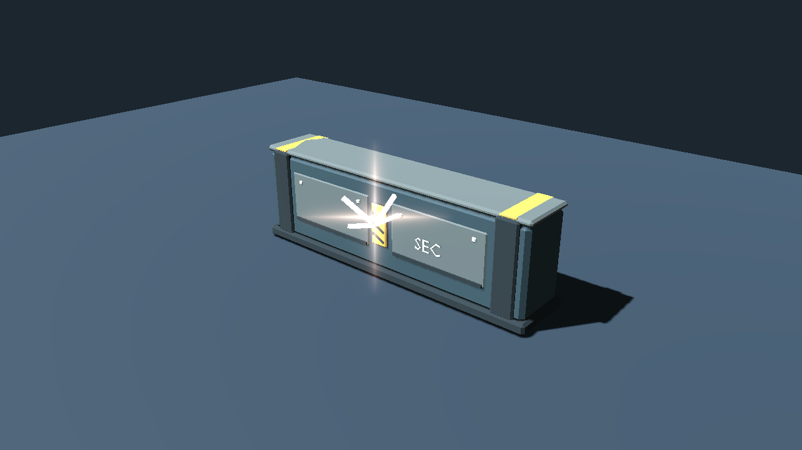
AfterDodge / fixed 20 ms
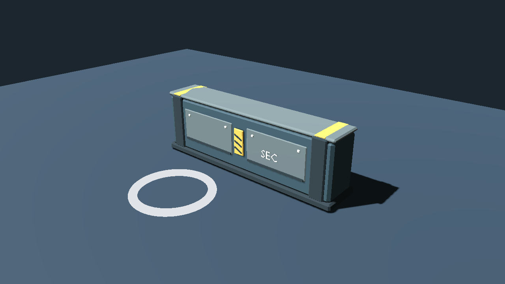
Before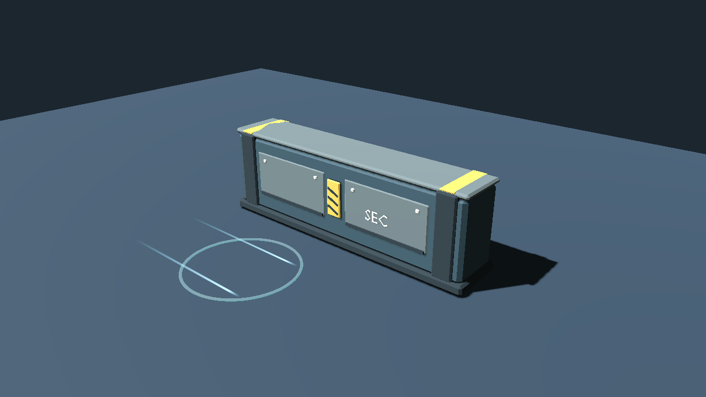
AfterNormal-AI road combat / real enemy death
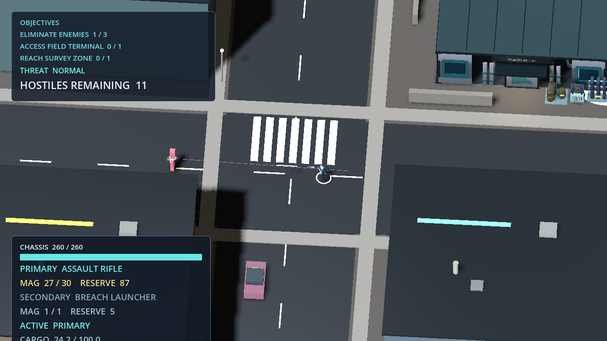
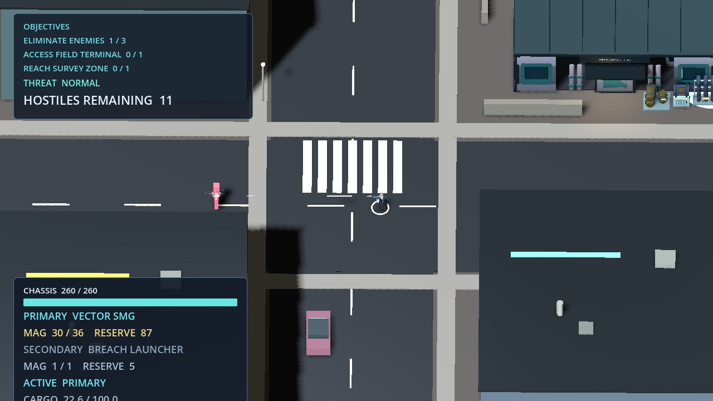
Unchanged character / Hanger + Field Office
Production route / Result + returned Hanger
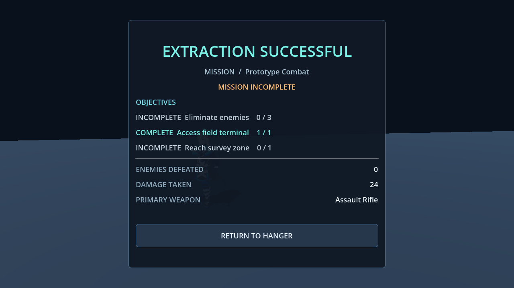
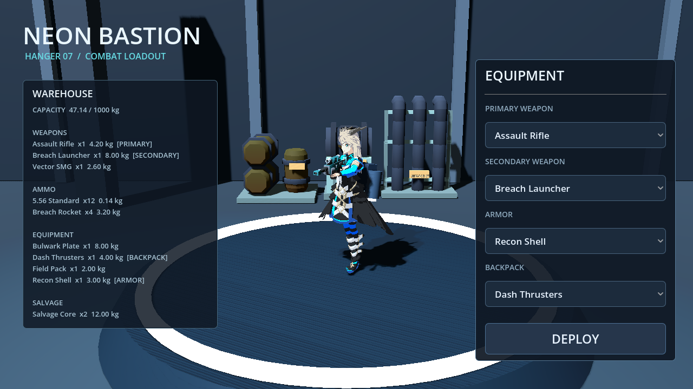
Known scope: old enemy and prototype ragdoll remain. Enemy public-release licensing remains blocked. No public/commercial clearance is claimed.